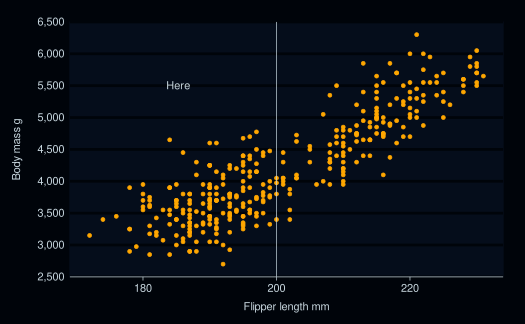
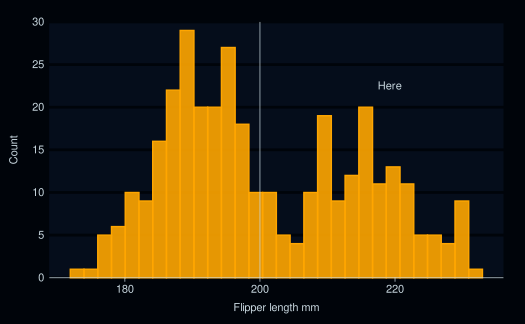

Set a style by setting:
the mode
geom defaults
col_palettes for discrete, continuous and ordinal scales.
Alternatively, use the weave_* functions to only apply a subset of these.
Usage
set_blanket(
...,
mode = light_mode_r(),
colour = "#357BA2FF",
colour_text = "#121B24FF",
colour_label = colour_text,
colour_reference_line = colour_text,
colour_curve = colour_reference_line,
fill = colour,
fill_label = colour_label,
alpha = 1,
alpha_area = 0.9,
alpha_bar = 0.9,
alpha_boxplot = 0.6,
alpha_crossbar = 0.6,
alpha_density = 0.6,
alpha_label = 0.05,
alpha_polygon = 0.9,
alpha_rect = 0.9,
alpha_ribbon = 0.6,
alpha_smooth = 0.6,
alpha_tile = 0.9,
alpha_violin = 0.9,
alpha_recursive = NULL,
linewidth = 0.66,
linewidth_reference_line = 0.33,
linewidth_curve = linewidth_reference_line,
size_point = 1.5,
size_pointrange = 0.2,
size_sf = 1.5,
size_text = 11/2.835052,
size_label = size_text,
family_text = "",
family_label = family_text,
col_palette_d = jumble,
col_palette_na_d = "#CDC5BFFF",
col_palette_c = viridisLite::mako(n = 9, direction = -1),
col_palette_na_c = "#988F88FF",
col_palette_o = scales::pal_viridis(option = "G", direction = -1),
col_palette_na_o = "#988F88FF",
theme = light_mode_r() + mode_orientation_to_x()
)Arguments
- ...
Provided to force user argument naming etc.
- mode
A ggplot2 theme (e.g.
light_mode_t()ordark_mode_r()) that anticipatesgg_*side-effects of removing relevant axis line/ticks and gridlines per themode_orientation.- colour
A default hex colour for the colour of geoms without a more specific
colour_*argument.- colour_text
A default hex colour for the colour of the "text" geom.
- colour_label
A default hex colour for the colour of the "label" geom.
- colour_reference_line
A default hex colour for the colour of the "hline", "vline" and "abline" geoms.
- colour_curve
A default hex colour for the colour of the "curve" geom.
- fill
A default hex colour for the fill of geoms without a more specific
fill_*argument.- fill_label
A default hex colour for the fill of the "label" geom.
- alpha
A default alpha for geoms without a more specific
alpha_*argument.- alpha_area
A default alpha for the "area" geom.
- alpha_bar
A default alpha for the "bar" geom.
- alpha_boxplot
A default alpha for the "boxplot" geom.
- alpha_crossbar
A default alpha for the "crossbar" geom.
- alpha_density
A default alpha for the "density" geom.
- alpha_label
A default alpha for the "label" geom.
- alpha_polygon
A default alpha for the "polygon" geom.
- alpha_rect
A default alpha for the "rect" geom.
- alpha_ribbon
A default alpha for the "ribbon" geom.
- alpha_smooth
A default alpha for the "smooth" geom.
- alpha_tile
A default alpha for the "tile" geom.
- alpha_violin
A default alpha for the "violin" geom.
- alpha_recursive
A default alpha applied to all geoms.
- linewidth
A default linewidth for geoms.
- linewidth_reference_line
A default linewidth for the the "hline", "vline" and "abline" geoms.
- linewidth_curve
A default linewidth for the the "curve" geom.
- size_point
A default size for the "point" geom.
- size_pointrange
A default size for the "pointrange" geom.
- size_sf
A default size for the "sf" geom.
- size_text
A default size for the "text" geom.
- size_label
A default size for the "label" geom.
- family_text
A default family for the "text" geom.
- family_label
A default family for the "text" geom.
- col_palette_d
For a discrete scale, a character vector of hex codes.
- col_palette_na_d
For a discrete scale, a hex code.
- col_palette_c
For a continuous scale, a character vector of hex codes.
- col_palette_na_c
For a continuous scale, a hex code.
- col_palette_o
For an ordinal scale, a
scales::pal_*()function.- col_palette_na_o
For an ordinal scale, a hex code.
- theme
A ggplot2 theme that the
gg_*function will add without side-effects. Note, themodetakes precedence, unlessmode = NULL.
Examples
library(ggplot2)
library(ggblanket)
library(palmerpenguins)
set_blanket(
mode = dark_mode_r(),
colour = orange,
annotation_colour = darkness[1],
)
penguins |>
gg_point(
x = flipper_length_mm,
y = body_mass_g,
x_breaks = scales::breaks_pretty(3),
) +
geom_vline(xintercept = 200) +
annotate("text", x = I(0.25), y = I(0.75), label = "Here")
#> Warning: Removed 2 rows containing missing values or values outside the scale range
#> (`geom_point()`).

penguins |>
gg_histogram(
x = flipper_length_mm,
x_breaks = scales::breaks_pretty(3),
) +
geom_vline(xintercept = 200) +
annotate("text", x = I(0.75), y = I(0.75), label = "Here")
#> `stat_bin()` using `bins = 30`. Pick better value with `binwidth`.
#> Warning: Removed 2 rows containing non-finite outside the scale range (`stat_bin()`).
